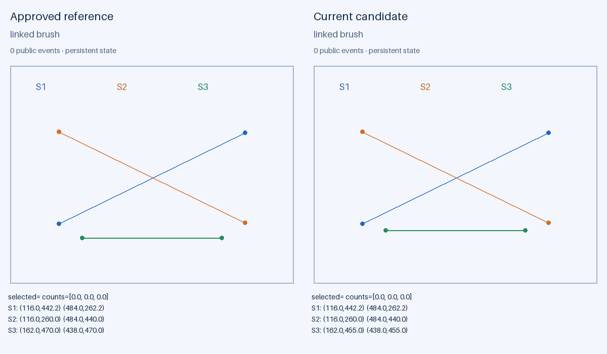
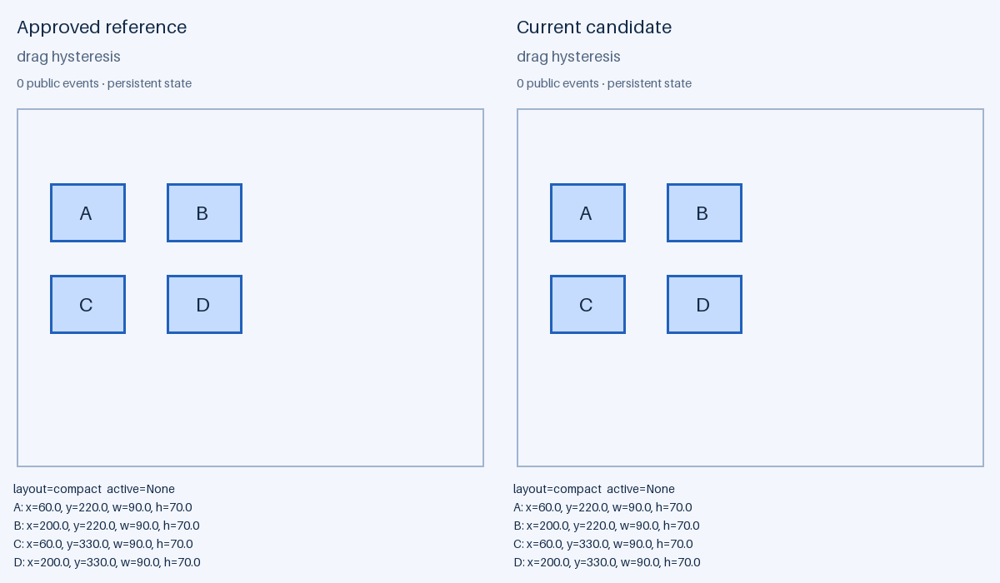
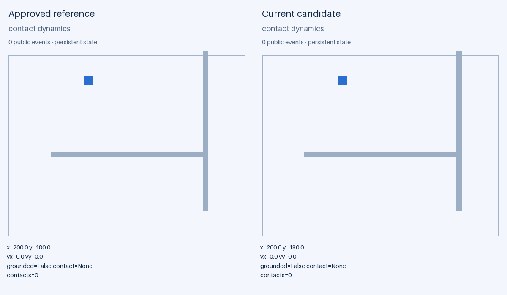
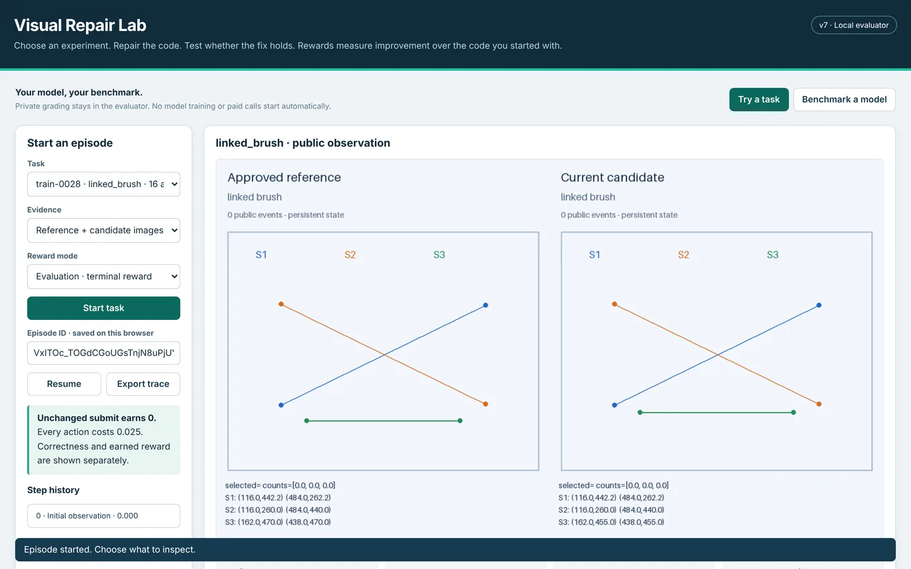

The problem
A matching screen is not a working fix
Coding agents can make the current frame look right and still leave the software wrong. Visual Repair Lab measures the whole repair loop: find the cause, fix it, and choose a test that could expose an incomplete fix.
- Boxes shift on portrait framesDetection boxes line up on landscape video but drift on portrait frames.
- Isolate the causeThe agent changes the frame shape while holding the detections constant and finds wrong letterbox padding.
- The first patch is incompleteIt fixes the horizontal padding and misses the vertical padding. The current screen now looks right.
- A good test catches itTrying another aspect ratio exposes the remaining error. Protected cases then grade the final repair.
This example mirrors the held-out detection-overlay family. All tasks are controlled procedural versions of real engineering problems; how well they transfer to production code is a hypothesis to test.
How it works
One episode, from first look to protected grade
Each environment action costs one unit of a fixed budget. The agent decides what to inspect, which interaction separates possible causes, and when it has enough evidence to submit. No verification sequence is prescribed.
- Observereference + candidate
- Experimentdrag, zoom, brush, advance
- Editsaves a revision
- Runactivates it
- Testtry to break the fix
- Submitprotected grader

Scripted probe against the live v7 server on task train-0028 (Chart & brush, one hidden rule, budget 16). Not a model run.
What the agent receives
- Rendered reference and candidate, one current image per decision
- Public state and event history, saved and active code, revision IDs
- Controls with valid argument ranges, action examples, remaining budget
- The supported Python subset (
def solve(state))
What stays inside the evaluator
- Hidden rules and their numeric values
- Reference programs and protected grading cases
- Starting grade, curriculum specs and private reward ledgers
- Banks and databases, behind an HTTP boundary on a separate filesystem
Task families
Bugs that a single frame can hide
Three families form the generated training distribution. A fourth, detection overlay, is supported by the evaluator and held out as a whole family.

Drag · 33 tasks- Investigates
- Pointer capture, layout thresholds, pointer scaling, conditional drawing
- Hidden failure
- A card moves correctly until capture leaves it or the layout changes
- Investigates
- Shared transforms, projection, clipping, linked selection
- Hidden failure
- The current view works while another view or transform breaks

Contact dynamics · 38 tasks- Investigates
- Integration order, limits, collisions, reported contact state
- Hidden failure
- A short motion agrees; a longer run or higher speed fails
- Investigates
- Box padding, confidence cutoffs, suppression, labels, clipping
- Hidden failure
- A plausible overlay disagrees after the aspect ratio or overlap changes
Generation and certification
Tasks are generated, then proven gradable
Each task combines a family, a hidden base world, one to three ordered conditional rules, a starting candidate, a budget and a split. Rules are built from six blocks: limits, gains, thresholds, snapping, offsets and operation order. A verifier, not a model's opinion, decides what gets in.
- Source parityWith added rules disabled, the task matches its base world exactly.
- Reference agreementValid output that agrees with an independent reference in the real interpreter.
- Omission witnessesAt least two protected cases per rule that fail if the rule is left out.
- Control contractEvery rule is reachable through the generic public controls.
- Distinct behaviorThe bug is observable, so a careful agent can find it.
Release generation run
Rejected tasks are kept with reason codes. Grading runs submitted code on protected event histories and compares structured outputs with the reference (absolute tolerance 1e-6, relative 1e-9). A catalogue policy that sees only public observations solves every target with two actions to spare, which establishes finite solvability.
Adaptive curriculum
Eight attempts estimate a task's pass rate p for a frozen checkpoint. Sampling priority is p(1−p), highest near one half. Zero-success tasks are parked, tasks above 0.9 are retired, and an editor adds or drops rules and budget. Every child task is recertified.
Adapts ideas from PLR, ACCEL, PAIRED, learnability-based sampling and DAPO without claiming their published training results.
Reward design
Pay for improvement, not inherited correctness
Let S be the checks the starting code already passes, F the checks the submitted code passes, and N the total. S stays private and fixed during the episode.
Terminal reward (evaluation mode)
| Unchanged behavior (F = S) | 0 |
| Improvement (F > S) | 8 × (F−S)/(N−S), plus 2 for a full repair |
| Regression (F < S) | −2 × (S−F)/N |
| Costs | −0.025 per action, −0.1 per invalid action, −0.25 for submitting unactivated code, −2 for running out of budget without submitting |
The earlier formula paid for checks the starter already passed: unchanged code earned a positive return on 89 of 134 tasks (median +1.2411). The v7 reward pays zero on all 134.
Try it
Training-only process signals
Train mode adds bounded feedback so an agent learns even when every whole case still fails. None of it was applied in the seven-profile comparison below, and its benefit for learning is not yet demonstrated.
| Signal | Pays for | Cap |
|---|---|---|
| Repair progress | Field-level agreement above the starting value and previous high-water mark | 0.75 |
| Test power | Exposing known omission mutants after a behavior-changing edit | 0.5 (0.1 per action) |
| Final-revision verification | Tests on the submitted revision that match the reference | 0.25 |
| Visual comparison | Correctly comparing displayed reference and candidate values | 0.25 |
| Prediction | Correctly predicting an observed consequence | 0.25 |
Results
Seven model profiles, nine shared tasks
Completed development comparison, October 30, 2026: 63 attempts, 60 submissions, 3 full repairs and no unscored slots. Each profile made one attempt per task in evaluation mode. All 63 returns were recomputed from the formula and matched within 1e-9.
| Configured profile | Full repairs | Submitted | Mean submitted checks | Invalid actions | Mean return |
|---|
GPT-6 Astra repaired Chart 1 (3/121 to 121/121) and Drag 3 (48/129 to 129/129); Gemini 4 Argon also repaired Chart 1. Mean submitted checks average only submitted tasks, and high inherited correctness can coexist with a negative return. Results reflect these interfaces and inference settings on public development tasks; they are not a general model ranking.
How the return is earned
Recorded cases from the comparison.
| Case | Checks | Actions | Return |
|---|---|---|---|
| Unchanged drag | 113 → 113 / 129 | 1 | −0.0250 |
| Drag regression | 113 → 112 / 129 | 16 | −0.4155 |
| Partial chart repair | 0 → 64 / 121 | 10 | 3.9814 |
| Full chart repair | 3 → 121 / 121 | 14 | 9.6500 |
| Full drag repair | 48 → 129 / 129 | 44 | 8.9000 |
| Physics, never submitted | start 36 / 109 | 48 | −7.4000 |
Historical GPT baseline (v6)
360 trajectories: three profiles on the same 120 worlds, 30 per family. Full-repair rate with 95% Wilson intervals. Earlier reward definition; not pooled with the comparison above.
Paired exact tests on matched worlds: Sol vs Terra 21 vs 4 discordant successes, Sol vs GPT 5.6 19 vs 1 (Holm-adjusted p = 0.00273 and 0.000160). The hard stratum produced 0, 1 and 0 full repairs out of 40.
What the traces reveal
Tests can confirm the wrong explanation
The final patch stored a transform per view; the reference shares one across views and clips x to 70–400 everywhere. All four final tests matched while 42 of 121 protected checks failed.
Sparse evidence leaves boundary errors
127 of 129 checks passed. The code entered the wide layout at width 480; the reference does above 460. A reset and resize to 461 exposes it. No interaction followed the final activation.
Execution failures need their own category
A final edit containing invalid Python was submitted without activation on the last action, scoring 0 of 121. That is a workflow failure under budget, not a semantic repair error.
| v6 failure diagnostics (categories overlap) | GPT 6.1 Sol | GPT 6.1 Terra | GPT 5.6 Sol |
|---|---|---|---|
| Failed submitted episodes | 95 | 112 | 114 |
| Active output matched, protected checks failed | 85 | 86 | 105 |
| All chosen tests matched, protected checks failed | 28 | 39 | 15 |
| Failed with no test after the final revision | 60 | 54 | 92 |
| Submitted revision never activated | 5 | 9 | 0 |
The interface is part of the measured difficulty: one profile produced 85 format failures in 154 calls and another 60 in 245, and malformed responses consumed budget like any other action.
Engineering
Measurement you can audit
Recorded trajectories were replayed independently from their saved inputs, and the release receipts for tests, concurrency and the reward audit ship in the repository’s validation folder.
Design choices
- Data-only checkpoints. Compressed, digest-checked JSON; no pickle and no actor-supplied state. Code, RNG, credit sets and ledgers persist.
- Idempotent steps. Duplicate request IDs return the saved response; competing decisions on one episode get a conflict; a crashed worker leaves the last state intact.
- Runtime and bank seals. Changed code or tasks require a new database instead of a silent resume.
- Separated roles. Generator, evaluator and actor run apart. The actor only ever sees public HTTP responses.
- Restricted Python. Candidate code runs in a bounded interpreter. It is a research control, not an OS sandbox.
How the design evolved
- Stage 1–2Source-only runs solved early tasks, so the specification moved into image-dependent reference behavior and the agent began choosing its own experiments.
- Stage 3–4Setting menus hidden, budgets reduced; process diagnostics, revision binding and explicit execution contracts added.
- Stage 5–6Typed generation, certificates, an actor-only client, independent references and 120 matched worlds per model.
- Stage 7Unchanged code could earn reward and concurrent steps serialized; fixed with relative rewards and incremental state.
Debug the measurement system before interpreting a model score. A transport interruption is not a failed repair. Unsupported interpreter syntax is not automatically a bad algorithm. A matching screen is not evidence that all relevant states were tested.
Run it
Local evaluator in two commands
Python 3.11–3.13 on macOS or Linux. No API key or GPU is needed for the evaluator.
git clone https://github.com/tusu18/visual-repair-lab
cd visual-repair-lab
bash scripts/install.sh
bash scripts/start_lab.sh # open http://127.0.0.1:8822/# or in a clean container
docker compose up --build# full test suite and release checks
.venv/bin/python -m pip install -r requirements-test.lock
.venv/bin/python scripts/run_tests.py --output validation/local --timeout 420
.venv/bin/python scripts/validate_v7.pyBenchmark your own model
Open Benchmark a model in the GUI, point it at a local OpenAI-compatible image-input endpoint, choose tasks and repetitions, and start. One attempt per task gives a baseline; eight estimate mixed-outcome groups.
For a wiring check without inference, run scripts/mock_model.py --port 8008 and use model scripted-submit-smoke. It always submits the starting code and earns no terminal reward.
Keep the evaluator, banks and databases out of the model's filesystem. Run the actor as a separate user, container or machine that talks to the public HTTP endpoint only.

Scope
What this does not show yet
- No model weights were trained. Whether RL on these tasks improves a model needs a before-and-after experiment on fresh private worlds.
- The 134 bundled tasks are public development data, not a holdout. A private evaluation needs a separately generated, access-controlled bank.
- Finite tests are not proof. Reference parity and adversarial tests cover known cases, not every possible program.
- Process rewards are unvalidated for learning. Field progress can rise without solving whole cases; test power counts exposure, not understanding.
- Numeric footers are visible in image mode. Footer-free and text-only arms exist to separate visual reasoning from reading numbers.
- Rendering is two-dimensional, and detection-overlay tasks measure post-processing repair, not detector accuracy on real photos.